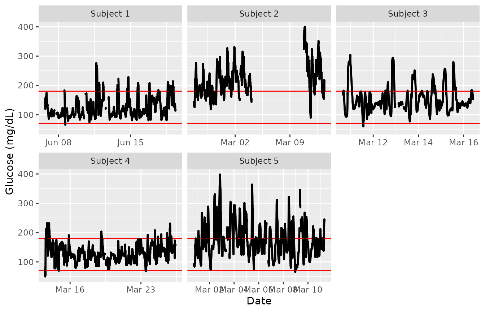

Getting Started in iglu
Steve Broll, Elizabeth Chun, Irina Gaynanova, David Buchanan
iglu.RmdThe iglu package is designed to assist in the analyses of data from Continuous Glucose Monitors (CGMs). CGMs are small wearable devices that measure glucose levels continuously throughout the day, with some monitors taking measurements as often as every 5 minutes. Data from these monitors provide a detailed quantification of the variation in blood glucose levels during the course of the day, and thus CGMs play an increasing role in clinical practice. For more on CGMs, see Rodbard (2016) “Continuous Glucose Monitoring: A Review of Successes, Challenges, and Opportunities.”.
Multiple CGM-derived metrics have been developed to assess the quality of glycemic control and glycemic variability, many of which are summarized in Rodbard (2009) “Interpretation of continuous glucose monitoring data: glycemic variability and quality of glycemic control.”. The iglu package streamlines the calculation of these metrics by providing clearly named functions that output metrics values with one line of code.
The iglu package is designed to work with Continuous Glucose Monitor (CGM) data in the form of a data frame with the following three columns present:
Blood glucose level measurement [in mg/dL] (
"gl")Timestamp for glucose measurement (
"time")Subject identification (
"id")
The iglu package comes with example data from 5 subjects with Type II diabetes whose glucose levels were measured using a Dexcom G4 CGM. These data are part of a larger study analyzed in Gaynanova et al. (2020).
Shiny App
The iglu package comes with a shiny app containing all of the metric calculations as well as all plot types of the package itself.
The full app can be accessed by running iglu::iglu_shiny() (iglu must be installed to use the iglu_shiny function).
The app itself has a demo (reduced functionality) available at https://stevebroll.shinyapps.io/shinyigludemo/ with data pre-loaded.
Example Datasets
The iglu package includes two datasets: example_data_1_subject, and example_data_5_subject. The one subject data is simply the first subject of the five subject data.
Example data for 1 subject
Example data with 1 subject can be loaded with:
data("example_data_1_subject")This dataset contains 2915 observations of 3 columns corresponding to the three components listed in the introduction:
-
"id"- Factor (character string) column for subject identification -
"time"- POSIXct column for datetime values -
"gl"- Numeric column for glucose measurement
Data used with iglu functions may have additional columns, but the columns for id, time and glucose values must be named as above.
dim(example_data_1_subject)
#> [1] 2915 3
str(example_data_1_subject)
#> 'data.frame': 2915 obs. of 3 variables:
#> $ id : Factor w/ 1 level "Subject 1": 1 1 1 1 1 1 1 1 1 1 ...
#> $ time: POSIXct, format: "2015-06-06 16:50:27" "2015-06-06 17:05:27" ...
#> $ gl : int 153 137 128 121 120 138 155 159 154 152 ...
head(example_data_1_subject)
#> id time gl
#> 1 Subject 1 2015-06-06 16:50:27 153
#> 2 Subject 1 2015-06-06 17:05:27 137
#> 3 Subject 1 2015-06-06 17:10:27 128
#> 4 Subject 1 2015-06-06 17:15:28 121
#> 5 Subject 1 2015-06-06 17:25:27 120
#> 6 Subject 1 2015-06-06 17:45:27 138Example data for 5 subjects
Example data with multiple subjects can be loaded with:
data("example_data_5_subject")This dataset contains the same 3 columns as the dataset in the single subject case, but now with 13866 observations from 5 subjects. The first subject in this multiple subject dataset is the same as the single subject from the previous examples.
dim(example_data_5_subject)
#> [1] 13866 3
str(example_data_5_subject)
#> 'data.frame': 13866 obs. of 3 variables:
#> $ id : Factor w/ 5 levels "Subject 1","Subject 2",..: 1 1 1 1 1 1 1 1 1 1 ...
#> $ time: POSIXct, format: "2015-06-06 16:50:27" "2015-06-06 17:05:27" ...
#> $ gl : int 153 137 128 121 120 138 155 159 154 152 ...Importing and Cleaning data
Iglu comes with its own set of functions for the importing of raw data from several common CGM formats, as well as for the general reformatting of any data to work with the package.
Importing data
To import raw data from a Dexcom, FreeStyle Libre, Libre Pro, ASC, or iPro monitor, the read_raw_data function can be used. The first parameter should the name of the .csv file you are attempting to read. Note that the function currently only accepts files read.csv can parse. The next parameter is sensor = [sensor name]. Currently the supported values for sensor are “dexcom”, “libre”, “librepro”, “asc” and “ipro”. These correspond to the sensor whose format you are attempting to read from. The next parameter is id. This is the value that will be used as the subject’s id. This parameter has special values, setting it to “filename” will cause the function to use the filename as the id. Similarly, if this value is set to “read”, the function will attempt to read the subject id from the data. A value of “read” is not supported for the “asc” sensor. If no id parameter is passed, the filename will be used. Also, when reading from FreeStyle Libre format, if the phrase “mmol/l” is found in the column names, the glucose values will be multiplied by 18. The read_raw_data function will return a dataframe with three columns, “id”, “time”, and “gl”, corresponding to subject id, time, and glucose readings respectively. Sensor formats change with ongoing development, so these functions may become depreciated. If any issues are encountered, contact the package maintainer. This is currently Irina Gaynanova, who can be reached at irinag@stat.tamu.edu
Ex.:
read_raw_data("mydexcomdata.csv", sensor = "dexcom", id = "read")Processing data
The process_data function is designed to take a dataframe or tibble with an arbitrary number of columns with arbitrary column names and return a dataframe with only the columns “id” “time” and “gl”, which is the format used by iglu. It currently takes five parameters, the data to be processed, id, a string indicating the column name of the subject ids, timestamp, a string matching the column name where the timestamps can be found, glu, a string matching the column name where the glucose readings can be found, and time_parser, a function which is used to parse the time strings into time objects, this currently defaults to as.POSIXct. Currently data, timestamp, and glu are required parameters. If no id parameter is passed an id of 1 will be assigned to all values in the data. If “mmol/l” is found in the column name for glucose readings, the readings will be multipled by 18 in the returned dataframe.
Ex.
process_data(example_data_5_subject, id = "id", timestamp = "time", glu = "gl")If your times are in a format not parsable by as.POSIXct, you can parse a custom format by passing function(time_string) {strptime(time_string, format = [format string])} as the time_parser parameter.
For example, the following call parses datetimes in mm/dd/yyyy hh:mm format.
process_data(data, id = "id", timestamp = "time", glu = "gl", time_parser = function(time_string) {strptime(time_string, format = "%d/%m/%Y %H:%M")})Calculating time-independent metrics
All the metrics implemented in the package can be divided into two categories: time-independent and time-dependent.
Time-independent metrics do not use any linear interpolation because the time component of the data is not used in their calculations. Because the time component is not necessary, when working with a single subject only a glucose vector is required. If a glucose vector for multiple subjects is supplied, or if a data frame that doesn’t have all three columns is supplied, these functions will treat all glucose values as though they are from the same subject.
Example metrics: time-independent
All metric functions in iglu will produce the output in a tibble form. See documentation on tibbles with vignette(‘tibble’) or ?tbl_df-class.
Some metric functions, like above_percent(), will return multiple values for a single subject.
above_percent(example_data_1_subject)
#> # A tibble: 1 × 4
#> id above_140 above_180 above_250
#> <fct> <dbl> <dbl> <dbl>
#> 1 Subject 1 26.1 8.20 0.377When a data frame is passed, subject id will always be printed in the id column, and metrics will be printed in the following columns.
As discussed above, just the glucose vector can be supplied for the single subject case.
above_percent(example_data_1_subject$gl)
#> # A tibble: 1 × 3
#> above_140 above_180 above_250
#> <dbl> <dbl> <dbl>
#> 1 26.1 8.20 0.377However, it is not recommended to pass just glucose values whenever the time and subject are also available, because this output will not contain the subject ID.
The list of target values for the above_percent metric is a parameter that can be changed:
above_percent(example_data_1_subject, targets = c(100, 200, 300))
#> # A tibble: 1 × 4
#> id above_100 above_200 above_300
#> <fct> <dbl> <dbl> <dbl>
#> 1 Subject 1 72.7 3.40 0Many metrics have parameters that can be changed. To see available parameters for a given metric, see the documentation i.e. ?above_percent or help(above_percent).
Not all metric functions return multiple values. Many, like the Hyperglycemia index metric (function call: hyper_index()) will return just a single value for each subject, producing a column for value and a column for subject id (if a dataframe is passed), with one row for each subject.
hyper_index(example_data_5_subject)
#> # A tibble: 5 × 2
#> id hyper_index
#> <fct> <dbl>
#> 1 Subject 1 0.391
#> 2 Subject 2 4.17
#> 3 Subject 3 1.18
#> 4 Subject 4 0.358
#> 5 Subject 5 2.21In this example, Subject 2 has the largest Hyperglycemia index, indicating the worst hyperglycemia. This is reflected in percent of times Subject 2 spends above fixed glucose target (see results of above_percent).
Calculating time-dependent metrics
Unlike time-independent metrics, time-dependent metrics require the input to be a dataframe with subject id’s, time, and glucose values. Time-dependent metric functions cannot be passed a vector of glucose values. With timestamped data, a potential challenge arises when timestamps are not on perfect intervals due to missing measurements. To address this challenge, we developed the CGMS2DayByDay function.
CGMS2DayByDay()
Observe that the timestamps in the first rows are not even. The CGMS2DayByDay function addresses this issue by linearly interpolating glucose measures for each subject on an equally spaced time grid from day to day. To prevent extrapolation, missing values are inserted between any two measurements that are more than intergap minutes apart (default value is 45 minutes, can be changed by the user). This function is automatically called by all metrics that require such interpolation, however it is also available to the user directly. The function is designed to work with one subject data at a time, the structure of function output is shown below.
str(CGMS2DayByDay(example_data_1_subject))
#> List of 3
#> $ gd2d : num [1:14, 1:288] NA 112.2 92 90.1 143.1 ...
#> $ actual_dates: Date[1:14], format: "2015-06-06" "2015-06-07" ...
#> $ dt0 : num 5The first part of the output, gd2d, is the interpolated grid of values. Each row corresponds to one day of measurements, and the columns correspond to an equi-distant time grid covering a 24 hour time span. The grid is chosen to match the frequency of the sensor (5 minutes in this example leading to \((24 * 60)/ 5 = 288\) columns), which is returned as dt0. The returned actual_dates allows one to map the rows in gd2d back to the original dates. The achieved alignment of glucose measurement times across the days enables both the calculation of corresponding metrics, and the creation time-dependent visuals such as lasagna plots. The default frequency can be adjusted as follows.
str(CGMS2DayByDay(example_data_1_subject, dt0 = 10))
#> List of 3
#> $ gd2d : num [1:14, 1:144] NA 111.1 92.9 89.1 138.2 ...
#> $ actual_dates: Date[1:14], format: "2015-06-06" "2015-06-07" ...
#> $ dt0 : num 10Note that the final part of the output reflects our input, and there are now only 144 columns instead of 288.
The CGMS2DayByDay function also allows specification of the maximum allowable gap to interpolate values across (default is 45 minutes) and a string corresponding to time zone (default is the timezone of the user’s system).
Functions for metrics requiring linear interpolation will accept the following three parameters that are passed on to CGMS2DayByDay():
- “
dt0” - Time frequency (numeric) for interpolation. Default will automatically match the frequency of the data - “
inter_gap” - Maximum allowable gap in minutes (numeric) for interpolation - “
tz” - String corresponding to timezone where the data’s measurements were recorded
In the example_data_5_subject dataset, it is important to specify tz = ‘EST’, because a Daylight Savings Time shift can cause miscalculations if the wrong timezone is used. A proper call for this dataset, being recorded in EST, would be:
CGMS2DayByDay(example_data_1_subject, tz = 'EST')Examples of proper metric function calls will be shown in the next section.
Example metrics: time-dependent
Some metric functions, like conga() (Continuous Overlapping Net Glycemic Action), will return just a single value for each subject, resulting in a 2 column tibble (1 column for id and 1 for the single value).
conga(example_data_1_subject, tz = 'EST')
#> # A tibble: 1 × 2
#> id CONGA
#> <fct> <dbl>
#> 1 Subject 1 37.0Other metrics can return multiple values for a single subject. For example, sd_measures(), which requires linear interpolation, computes 6 unique standard deviation subtypes per subject.
sd_measures(example_data_5_subject)
#> # A tibble: 5 × 7
#> id SDw SDhhmm SDwsh SDdm SDb SDbdm
#> <fct> <dbl> <dbl> <dbl> <dbl> <dbl> <dbl>
#> 1 Subject 1 26.4 19.6 6.54 16.7 27.9 24.0
#> 2 Subject 2 36.7 22.8 7.62 52.0 48.0 35.9
#> 3 Subject 3 42.9 14.4 9.51 12.4 42.8 42.5
#> 4 Subject 4 24.5 12.9 6.72 16.9 25.5 22.0
#> 5 Subject 5 50.0 29.6 12.8 23.3 50.3 45.9Notice the high fluctuations in Subject 5, with all but one subtypes of standard deviation being the largest for Subject 5. This provides additional level of CGM data interpretation, since frequent or large glucose fluctuations may contribute to diabetes-related complications independently from chronic hyperglycemia.
Calculating metrics for sleep or wake periods
Iglu provides a function for calculating metrics over a given time-range. The calculate_sleep_wake function allows the user to apply an arbitrary function to given data after it has been filtered by time of day. It supports calculating on inside the time range, outside the time range, or both separately.
Using calculate_sleep_wake
To use this function, pass it the data you want and the function or name of the function you want to apply. For example, to calculate the standard deviation of glucose readings from 12-6am, the function’s default time period, the following call will work.
calculate_sleep_wake(example_data_1_subject, sd_glu, calculate = "sleep")
#> # A tibble: 1 × 2
#> id SD
#> <fct> <dbl>
#> 1 Subject 1 25.4A custom time period can be defined with the sleep_start and sleep_end parameters. The values of these parameters should be real numbers between 0-24. If an integer is passed to sleep_start, the whole hour will be included. If an integer is passed to sleep_end, everything up to but not including that hour will be included. The following call will calculate the metrics for readings between 2:00-7:59am.
calculate_sleep_wake(example_data_5_subject, sd_measures, sleep_start = 2, sleep_end = 8, calculate = "sleep")
#> # A tibble: 5 × 7
#> id SDw SDhhmm SDwsh SDdm SDb SDbdm
#> <fct> <dbl> <dbl> <dbl> <dbl> <dbl> <dbl>
#> 1 Subject 1 10.2 3.02 3.15 21.3 23.9 12.2
#> 2 Subject 2 18.9 12.8 6.22 41.9 43.6 18.2
#> 3 Subject 3 17.6 9.99 4.86 20.1 32.7 26.8
#> 4 Subject 4 10.8 3.98 3.43 12.2 17.3 12.0
#> 5 Subject 5 28.1 10.7 5.88 29.4 38.4 27.2There is an option to calculate for either sleep, wake, or both periods. By default, the metric will be calculated for the sleep period. To calculate for the wake period, set the “calculate” parameter to “wake”. The following call will calculate the metric for all readings outside of 11pm-6:59am
calculate_sleep_wake(example_data_5_subject, grade, sleep_start = 23, sleep_end = 7, calculate = "wake")
#> # A tibble: 5 × 2
#> id GRADE
#> <fct> <dbl>
#> 1 Subject 1 4.44
#> 2 Subject 2 15.5
#> 3 Subject 3 7.28
#> 4 Subject 4 3.51
#> 5 Subject 5 11.7To calculate for sleep and wake periods separately and return both of those values, labeled accordingly, set the ‘calculate’ parameter to ‘both’.
calculate_sleep_wake(example_data_5_subject, gmi, calculate = "both")
#> # A tibble: 5 × 3
#> id `GMI sleep` `GMI wake`
#> <fct> <dbl> <dbl>
#> 1 Subject 1 5.97 6.41
#> 2 Subject 2 8.58 8.52
#> 3 Subject 3 7.05 6.98
#> 4 Subject 4 6.70 6.31
#> 5 Subject 5 6.94 7.69Custom parameters can still be passed to the applied function. Any parameters with different names from calculate_sleep_wake’s parameters will be passed on to the function. The following call applies COGI with the custom defined targets and weights.
calculate_sleep_wake(example_data_5_subject, cogi, calculate = "sleep", targets = c(80, 150), weights = c(.3,.2,.5))
#> # A tibble: 5 × 2
#> id COGI
#> <fct> <dbl>
#> 1 Subject 1 0.915
#> 2 Subject 2 0.524
#> 3 Subject 3 0.778
#> 4 Subject 4 0.894
#> 5 Subject 5 0.639All of these options can be combined
calculate_sleep_wake(example_data_5_subject, grade_eugly, sleep_start = 1, sleep_end = 9, calculate = "both", lower = 80, upper = 150)
#> # A tibble: 5 × 3
#> id `GRADE_eugly sleep` `GRADE_eugly wake`
#> <fct> <dbl> <dbl>
#> 1 Subject 1 59.0 31.0
#> 2 Subject 2 1.32 1.38
#> 3 Subject 3 41.0 21.6
#> 4 Subject 4 55.7 37.4
#> 5 Subject 5 25.3 6.99Visualizations
The iglu package supports multiple plot types summarized below:
| Function call | Visualization description | Main parameters |
|---|---|---|
plot_glu |
Multiple plot types: time series and lasagna |
plottype, lasagnatype
|
plot_roc |
Time series of glucose values colored by rate of change (ROC) |
subjects, timelag
|
hist_roc |
Histogram of rate of change (ROC) values |
subjects, timelag
|
plot_lasagna |
Lasagna plot of glucose values for multiple subjects |
datatype, lasagnatype
|
plot_lasagna_1subject |
Lasagna plot of glucose values for a single subject | lasagnatype |
agp |
Ambulatory Glucose Profile (AGP) |
maxd, daily
|
epicalc_profile |
Profile of glycemic episodes |
hypo_thresh, hyper_thresh
|
mage |
MAGE plot displaying peaks and nadirs |
plot, title
|
Time-series and rate of change plots are shown in examples below. For details on the other plotting types, see the specific vignette corresponding to the visualization.
Example plots: time-series
The simplest visual is the time series plot generated using the function plot_glu. This plot type can support both single and multiple subjects.
plot_glu(example_data_1_subject, plottype = 'tsplot', tz = "EST")
plot_glu(example_data_5_subject, plottype = 'tsplot', tz = "EST")
We set the ‘tz’ (timezone) parameter to be EST because the data was collected in the eastern time zone. If left blank, the time zone used for plotting will be the system’s time zone. Time zone is mainly an issue in cases where daylight savings time might make it appear as though there were duplicate values at some time points.
To just plot a single subject of interest from the grid of time series plots, set the ‘subjects’ parameter to be that subject’s ID.
plot_glu(example_data_5_subject, plottype = 'tsplot', subjects = 'Subject 3', tz = "EST")
The red lines can be shifted to any Lower and Upper Target Range Limits with the ‘LLTR’ and ‘ULTR’ arguments.
plot_glu(example_data_5_subject, plottype = 'tsplot', subjects = 'Subject 3', LLTR = 80, ULTR = 150, tz = "EST")
Lasagna plots
The plot_glu function also supports lasagna plots by changing the ‘plottype’ parameter. For more on lasagna plots, see Swihart et al. (2010) “Lasagna Plots: A Saucy Alternative to Spaghetti Plots.”. The lasagna plots in iglu can be single-subject or multi-subject. For more information see the lasagna_plots vignette.
Example plots: Rate of change
In addition , iglu also allows one to visualize local changes in glucose variability as measured by rate of change Clarke et al. (2009). There are two types of visualizations associated with rate of change, a time-series plot and a histogram. For both plots, the colors indicate rate of change: white indicates a stable rate of change while red and blue represent times at which the glucose is significantly rising or falling, respectively. Thus colored points represent times of glucose variability, while white points represent glucose stability. The below figure shows a side by side comparison of rate of change time-series plots for two subjects. Subject 1 shows significantly less glucose variability than Subject 5.

The next figure shows a side by side comparison of rate of change histogram plots for the same subjects. Once again, the colors show in what direction and how quickly the glucose is changing. The histogram plots allow one to immediately assess the variation in rate of change. Extreme values on either end of the histogram indicate very rapid rises or drops in glucose - a high degree of local variability. Here, Subject 1 once again shows lower glucose variability by having a narrower histogram with most values falling between -2 mg/dl/min and 2 mg/dl/min. Subject 5 has a shorter, more widely distributed histogram indicating greater glucose variability.